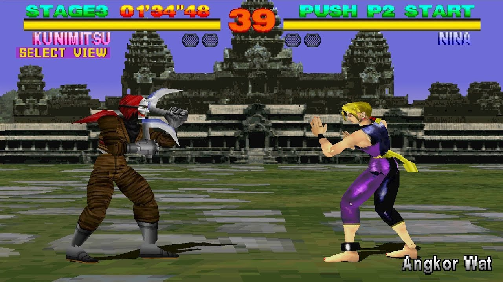
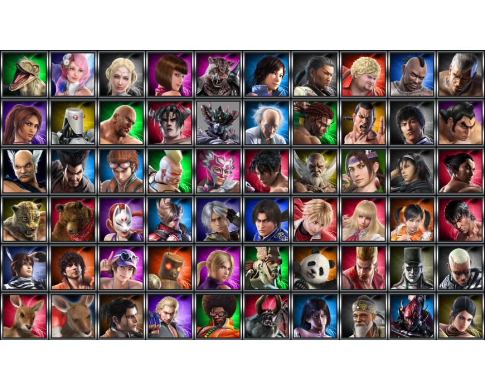
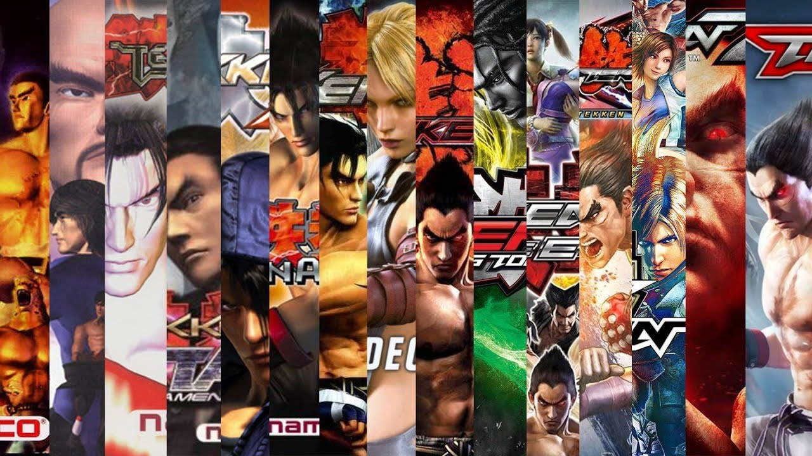
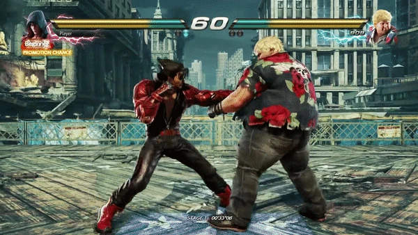
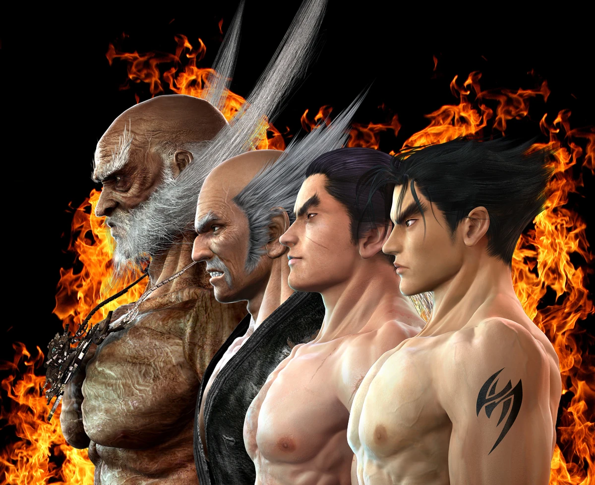
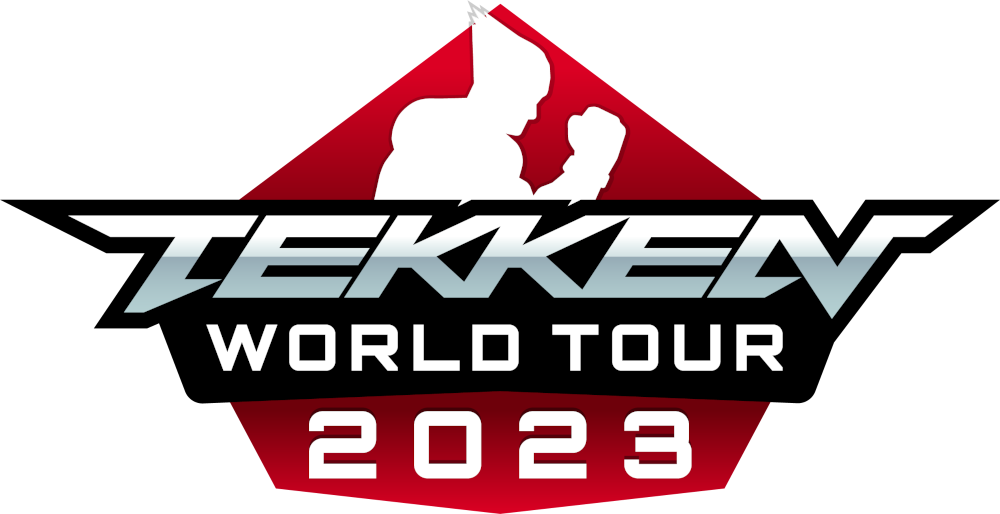
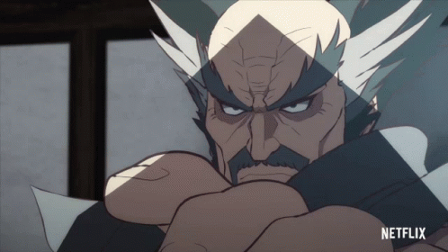
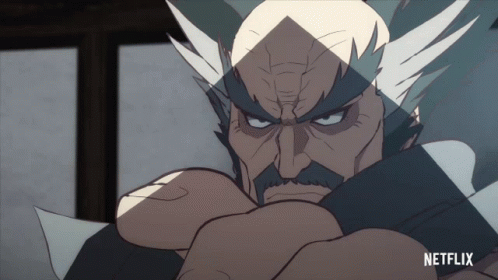
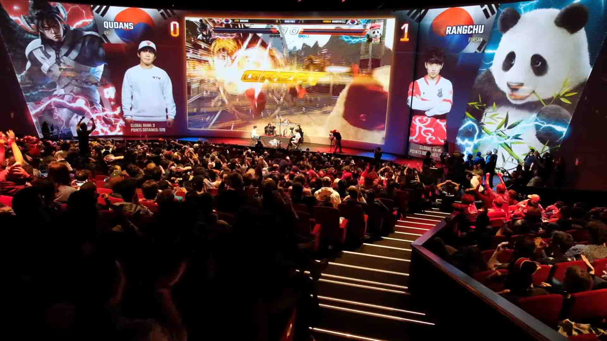

Tekken
A franquia "Tekken" é uma série de jogos de luta criada pela Bandai Namco Entertainment. Aqui está um resumo abrangente da franquia "Tekken":
A série "Tekken" foi lançada pela primeira vez em 1994 e rapidamente ganhou popularidade. Ela é conhecida por seu sistema de combate 3D e personagens únicos.
Uma característica marcante da franquia "Tekken" é a grande variedade de personagens jogáveis. A série apresenta uma mistura de lutadores humanos e não humanos, cada um com suas próprias histórias, estilos de luta e movimentos especiais. Alguns personagens notáveis incluem Kazuya Mishima, Heihachi Mishima, Jin Kazama, Ling Xiaoyu e muitos outros.
A série "Tekken" evoluiu ao longo dos anos, com várias sequências e atualizações, incluindo "Tekken 2", "Tekken 3", "Tekken 4", "Tekken 5", "Tekken 6" e "Tekken 7". Cada novo título trouxe melhorias gráficas e mecânicas de jogo.
Os jogos "Tekken" se destacam por seu sistema de combate baseado em movimentos em 3D, que permite aos jogadores moverem-se em todas as direções em um espaço tridimensional. Os jogos enfatizam combos, técnicas avançadas e estratégias de luta.
A franquia possui uma história contínua que gira em torno de rivalidades familiares, conspirações e eventos sobrenaturais. A saga dos Mishima é um dos principais focos da narrativa.
Assim como "Street Fighter", "Tekken" também é um destaque em competições de jogos de luta, com torneios em todo o mundo onde jogadores profissionais competem por prêmios em dinheiro.
A franquia se expandiu para incluir adaptações em mídias além dos videogames, incluindo filmes, histórias em quadrinhos e uma série animada.
 
 
"Tekken" é uma das séries mais conhecidas de jogos de luta e contribuiu significativamente para a popularização do gênero, especialmente nos anos 90.
A franquia "Tekken" continua a ser popular, com novos títulos e conteúdo sendo lançados regularmente. Ela tem uma base de fãs leal e mantém sua importância na história dos videogames. Em resumo, "Tekken" é uma franquia de jogos de luta conhecida por sua jogabilidade 3D, uma ampla variedade de personagens e uma história envolvente. Ela desempenhou um papel importante na evolução dos jogos de luta e na cultura dos videogames como um todo.